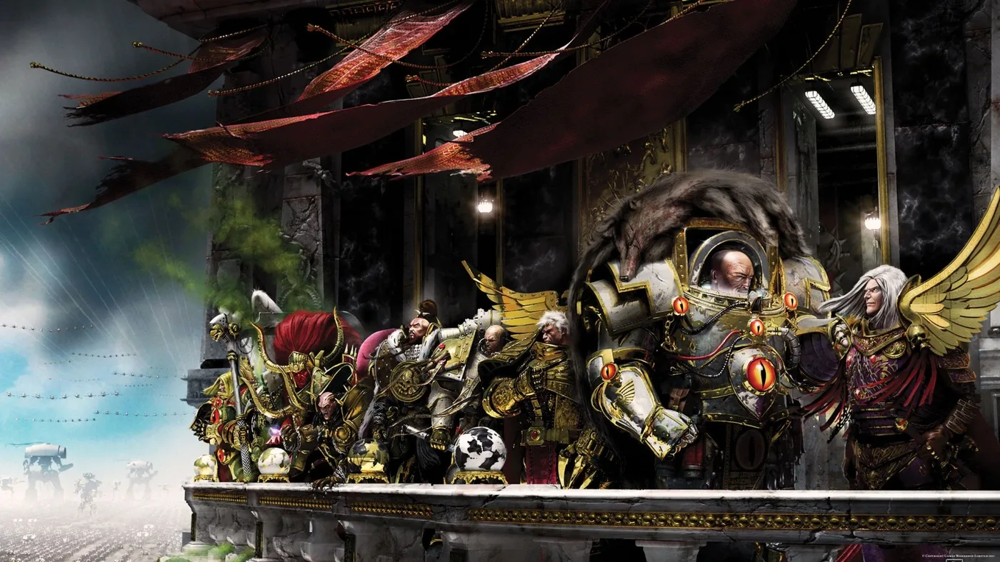

01ภาพรวม
Legion ที่ 2 และ 11 ของ Space Marines — ถูกลบทุกบันทึก ทุกรูปปั้น ทุกชื่อ ก่อน Horus Heresy จะเริ่ม ไม่มีใครรู้ว่าเกิดอะไรขึ้น
02ต้นกำเนิด
จักรพรรดิสร้าง Primarch 20 องค์และ Legion 20 กอง แต่ในยุค Horus Heresy มีเพียง 18 Legion ที่ถูกบันทึกไว้ ข้อมูลทั้งหมดเกี่ยวกับ Legion ที่ 2 และ 11 รวมถึง Primarch ทั้งสอง ถูกลบทิ้งด้วย "Edict of Obliteration" (Damnatio Memoriae — การประณามความทรงจำ) ซึ่งนักประวัติศาสตร์จักรวรรดิถือว่าเป็นการลบประวัติที่สำเร็จที่สุดในประวัติศาสตร์
03เนื้อเรื่องเจาะลึก
หลักฐานที่เหลืออยู่
บันทึกเดียวที่หลุดรอดมาคือข้อความที่ถูกพิมพ์ผิดพลาดลงในคู่มือทหาร Imperial Infantryman's Uplifting Primer ระบุว่า Legion ที่ 2 และ 11 เคยร่วมรบใน Rangdan Xenocides ช่วงยุค Great Crusade (ราว 860s.M30) แต่ไม่มีรายละเอียดว่าทำอะไร
ฐานรูปปั้นที่ว่างเปล่า
ในพระราชวังบน Terra มีรูปปั้น Primarch เรียงเป็นวง แต่ฐานที่ 2 และ 11 ว่างเปล่ามานาน ในนิยาย The Lightning Tower Rogal Dorn ครุ่นคิดว่า "ไม่มีใครพูดถึงพี่น้องสองคนนั้นเลย โศกนาฏกรรมของพวกเขาดูเหมือนความผิดปกติ — หรือจริง ๆ แล้วคือคำเตือนที่ไม่มีใครใส่ใจ?"
จักรพรรดิห้ามพูดถึง
ในนิยาย A Thousand Sons Mortarion บอก Magnus ว่า "จักรพรรดิห้ามเราพูดถึงเรื่องนั้นอีก" ส่วนในนิยาย Deliverance Lost เมื่อ Corax ถามว่าทำไมเขาเป็นคนที่ 19 แต่มีพี่น้องแค่ 17 คน จักรพรรดิตอบด้วยสีหน้าเศร้าว่า "อีกสองคน… ไว้คุยกันวันอื่น"
ทฤษฎีของแฟน ๆ
Games Workshop ไม่เคยเฉลย ทฤษฎีที่พูดถึงบ่อย: ถูกทำลายเพราะพันธุกรรมผิดปกติ (Sanguinius เคยกลัวว่า Blood Angels จะกลายเป็น "ฐานว่างที่สาม"), ถูก Chaos ครอบงำก่อน Horus, ถูกรวมเข้ากับ Ultramarines (ข่าวลือว่า Legion ที่ 13 โตขึ้นมากในช่วงนั้น) หรือ Space Wolves ถูกส่งไปทำลาย — ในบันทึกประวัติ Great Crusade มี 2 เหตุการณ์ที่ถูก "ลบข้อมูลทั้งหมด" ซึ่ง Space Wolves มีส่วนร่วม ทั้งหมดนี้ ยังไม่มีคำตอบทางการ
Games Workshop กับความลับนี้
Games Workshop เลือกเก็บเรื่องนี้เป็นความลับมาตลอดหลายสิบปี และความลึกลับนี้กลายเป็นเสน่ห์อย่างหนึ่งของจักรวาล 40K ในหนังสือ Horus Heresy ของ Forge World ชื่อ Legion และ Primarch ทั้งสองถูกคาดดำไว้ในตาราง Legion
04นิสัยและวัฒนธรรม
- ในห้องประชุมบน Macragge Guilliman เก็บเก้าอี้ว่างสองตัวที่คลุมผ้าขาวไว้ให้พี่น้องที่หายไป — "การไม่อยู่ของพวกเขาต้องถูกจดจำ นั่นคือเกียรติ"
- Jaghatai Khan เผลอคิดว่า "จักรวาลทั้งหมดอยู่ในมือพี่น้องยี่… ไม่ใช่ สิบแปดคน"
- Vulkan บอกว่า "ไม่มีใครอยากเห็นเสาว่างอีกต้น ความเศร้าของการสูญเสียสองคนก็มากพอแล้ว"
05จุดที่น่าสนใจ
- เป็นปริศนาใหญ่ที่สุดของจักรวาล 40K ที่ยังไม่มีคำตอบ
- ทุกนิยาย Horus Heresy มีการพาดพิงถึงแบบอ้อม ๆ
- แฟน ๆ นิยมสร้าง Legion II และ XI ในแบบของตัวเอง
06ความสามารถพิเศษ
สิ่งที่ทำให้ Lost Legions แตกต่างจากทัพอื่น — ทั้งพลังที่ติดตัวมาทั้งเผ่า/ทัพ และความสามารถของบุคคลสำคัญ
ของทั้งเผ่า/ทัพ
Edict of Obliteration
บทลงโทษสูงสุดของจักรวรรดิ ลบทุกบันทึก รูปปั้น และสัญลักษณ์ของบุคคลหรือองค์กร — กรณี Legion II และ XI คือครั้งที่สมบูรณ์ที่สุด
07วีรกรรมและเหตุการณ์สำคัญ
Rangdan Xenocides
บันทึกเดียวที่หลงเหลือว่า Legion II และ XI ร่วมรบในสงครามกวาดล้างเอเลียน Rangdan
ถูกลบจากบันทึก
จากนิยาย The First Heretic Legion ทั้งสองถูกลบก่อนการเผา Monarchia อย่างน้อยหลายสิบปี
ยังคงเป็นปริศนา
ไม่มีข้อมูลทางการเพิ่มเติม
08ยุค 40K — สหัสวรรษที่ 41
ในยุค 40K แทบไม่มีใครในจักรวรรดิรู้ว่าเคยมี Legion ที่ 2 และ 11 อยู่ ข้อมูลนี้รู้กันเฉพาะในหมู่ผู้มีอำนาจสูงสุดหรือผู้รอดชีวิตจากยุค Heresy
09เนื้อเรื่องล่าสุด (Era Indomitus / M42)
ยังไม่มีเนื้อเรื่องใดเผยชะตากรรม แต่การกลับมาของ Primarch หลายองค์ (Guilliman, Lion) ทำให้แฟน ๆ ตั้งคำถามว่าความลับนี้จะถูกเปิดเผยในวันหนึ่งหรือไม่
10แกลเลอรี
